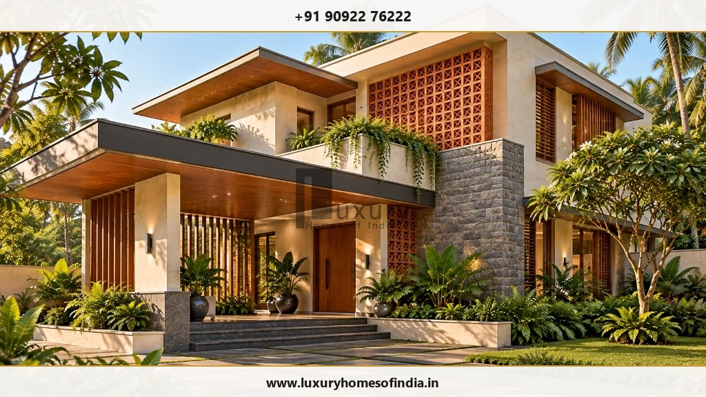
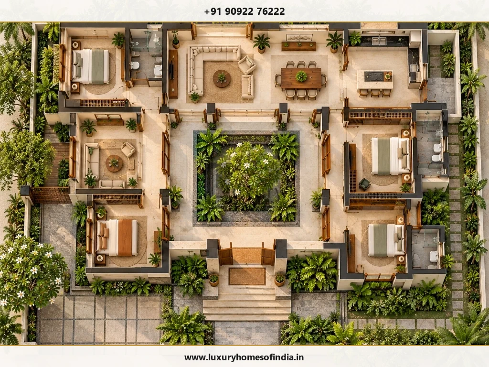
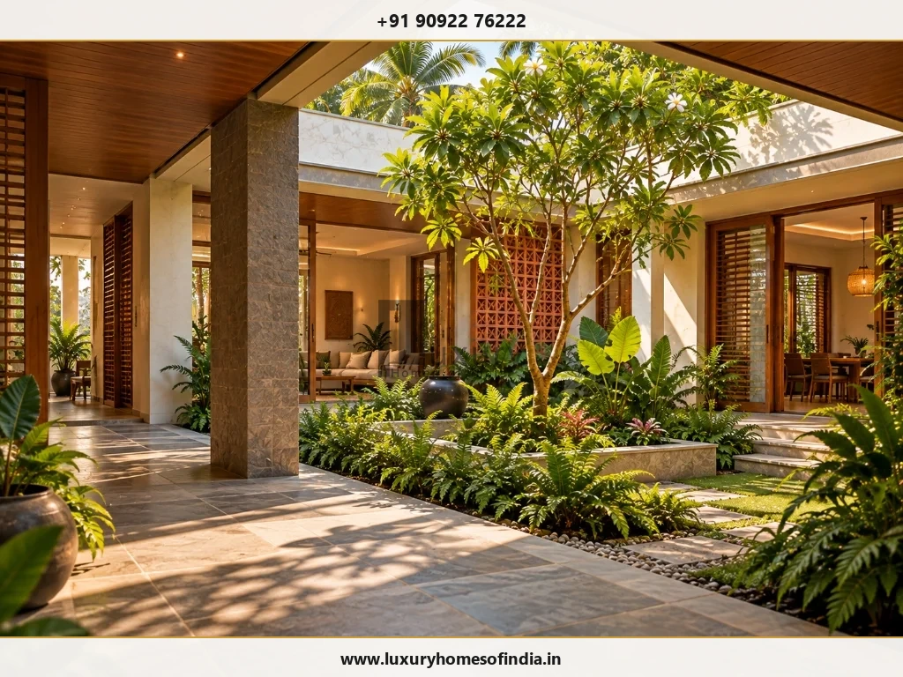
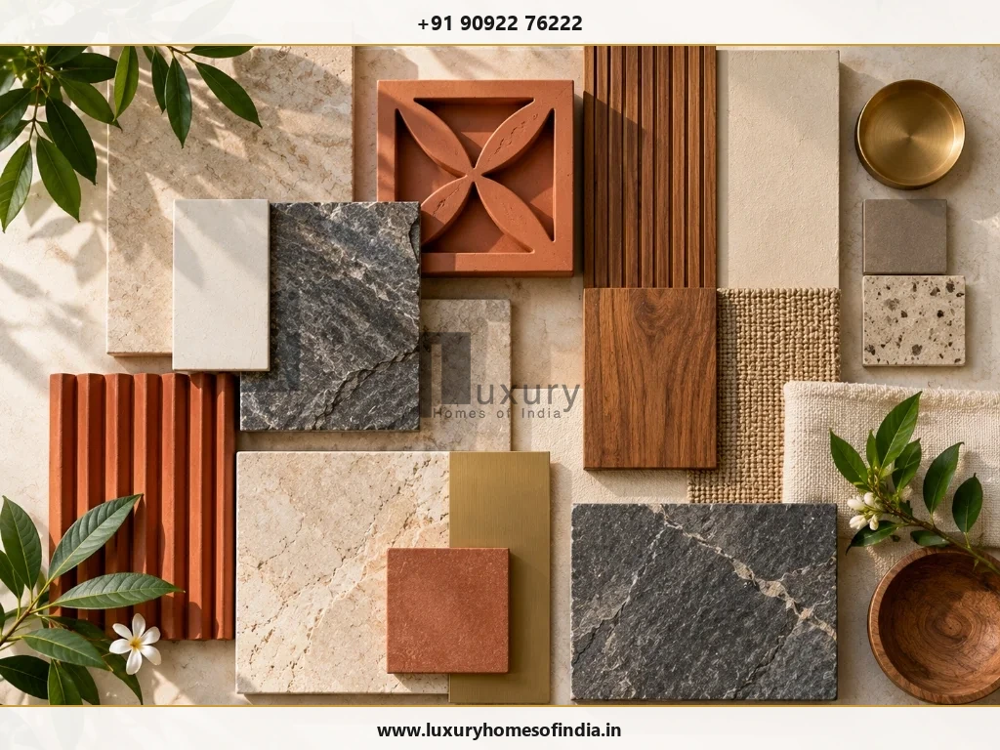
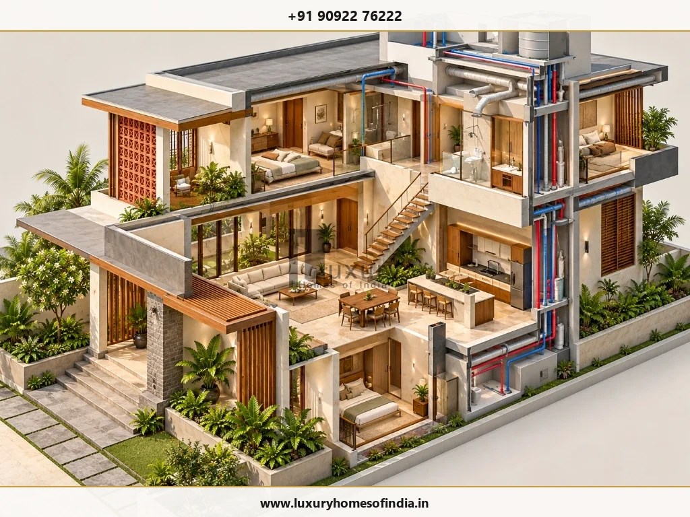

Custom Home Design in Chennai: Plan a Home Around Your Life
A custom home should begin with the way you want to live—not with a standard floor plan.
Executive Summary
Custom home design translates a family's lifestyle priorities—such as multi-generational privacy, Vastu alignment, home offices, and courtyard entertaining—into a site-responsive architectural plan. In Chennai, custom planning harmonizes regional material selection, solar shading, structural engineering, and MEP services before breaking ground.

What Makes a Home Design Genuinely Custom?
Custom design is far more than adjusting room dimensions or selecting premium wall paint for an existing floor plan template. It evaluates how your household uses space every day, how rooms relate to one another, and how the building responds to its plot orientation, soil conditions, and surrounding neighborhood.
At Luxury Homes of India (LHI), our architectural design process begins with clarifying what your home needs to achieve, prioritizing what matters most to your family, and identifying technical decisions that require engineering review.
Your custom brief can explore:
- Family & Private Zones: Distinction between shared entertainment halls and quiet bedroom retreats.
- Multi-Generational Suites: Ground-floor parental bedrooms with non-slip flooring and step-free access.
- Kitchen Workflows: Wet cooking kitchens, dry show kitchens, pantry storage, and utility yards.
- Quiet Workspaces: Dedicated home offices, libraries, or hobby rooms with acoustic isolation.
- Arrival & Parking: Covered car ports, driver quarters, and secure entrance foyers.
- Indoor-Outdoor Continuity: Private courtyards, verandahs, landscaped terraces, and light wells.
- Vastu Preferences: Room placements, main entrance directions, and water feature alignments.
- Future Flexibility: Provision for home elevators, solar PV systems, and adaptable room uses.
Match Your Priorities to Design Decisions
Different households require different architectural solutions. Use this evaluation matrix to begin organizing your design priorities:
| Your Lifestyle Priority | What the Architectural Design Should Examine |
|---|---|
| Multi-Generational Living | Ground-floor bedroom locations, acoustic privacy, shared gathering halls, and step-free circulation. |
| Frequent Entertaining | Guest entry flow, formal dining access, kitchen utility separation, and powder room placement. |
| Working From Home | Noise isolation, high-speed data cabling conduits, natural daylighting, and private meeting access. |
| A Compact Urban Plot | Vertical circulation, central light courts, built-in storage, and compliance with CMDA setback rules. |
| Outdoor Living & Verandahs | Solar shading louvers, privacy screens, rain drainage slopes, and weather-resistant stone paving. |
| Future Adaptability | Adaptable wall partitions, elevator shaft framing, and pre-wired solar power conduits. |

Design for Your Plot, Not Another Home's Footprint
Architectural reference images communicate aesthetic preferences, but they do not establish what will work on your specific plot. Every site across Chennai requires location-specific planning:
- Plot Dimensions & Access: The plot's shape, road width, and access gates dictate driveway turning radiuses, entry porticos, and building setbacks under CMDA building norms.
- Orientation & Solar Daylight: Window placement, deep roof overhangs, and low-E glazing should be designed together to maximize natural daylight while controlling heat gain during Chennai's hot summer months.
- Neighborhood Privacy: Adjacent buildings influence where bedrooms, balconies, and private courtyards are positioned to prevent visual overlooking.
- Rainwater & Drainage: Roof slopes, terrace downpipes, subterranean sumps, and site grading must be engineered to handle heavy North-East monsoon rains.

Bring Regional Character Into the Design
A custom home in Chennai should respond to its regional climate and cultural context rather than relying on a generic global template. Architectural planning can incorporate shaded verandahs, terracotta jaali screening, central courtyards, and native landscaping suited to the coastal tropical environment.
Traditional concepts can be reinterpreted in a clean, contemporary manner. A courtyard-inspired space organizes surrounding rooms, promotes natural stack ventilation, and brings natural greenery directly into daily family living.

Choose Materials as Part of the Architecture
Materials influence how a home looks, feels, and ages over decades. Rather than selecting finishes independently, evaluate how stones, woods, and tiles work together across your home:
- Flooring Options: Italian marble, Sadahalli granite, terrazzo, or engineered hardwood.
- Architectural Screening: Terracotta jaali blocks, timber louvers, or perforated metal panels.
- Exterior Cladding: Natural slate, rustic stone masonry, or weather-resistant mineral plaster.
- Metal Accents: Brushed brass, SS-316 stainless steel, or anodized bronze hardware.

Coordinate Architecture, Interiors & Technical Requirements
A custom home needs more than an attractive rendering. Its spatial layout, RCC structure, MEP services, and interior fit-outs must be coordinated seamlessly:
- Personalized Space Planning: Finalize room flow, furniture layouts, and storage volumes before locking floor plans.
- Vastu-Aligned Layouts: Harmonize Vastu principles with structural columns, plumbing cores, and daylighting.
- Structural & MEP Coordination: Align double-height living rooms, staircases, HVAC ducting, and electrical conduits in 3D execution drawings.
Explore our guides on luxury house design, modern luxury home design, and turnkey luxury home construction.
Your Custom Home Design Journey
- Establish the Brief: Gather plot details, family space needs, reference images, and budget parameters.
- Review Spatial Plan: Evaluate room relationships, circulation, and privacy against everyday living scenarios.
- Refine Architectural Direction: Finalize 3D building forms, elevations, window openings, and material palettes.
- Coordinate Technical Requirements: Align structural calculations, MEP ducting, interior joinery, and execution specifications.
- Confirm Agreed Scope: Finalize detailed drawings, specifications, visualisations, and construction support terms.
Start With the Home You Need
Bring your ideas, plot information, and practical requirements to Luxury Homes of India. Speak with our architectural team about defining a custom design scope tailored specifically to your family's vision.
Call +91 90922 76222 Discuss Your Home Design